주요서비스
산을 안전하고 깊이 있게 경험할 수 있도록 설계된 통합 서비스
맞춤형 코스
실시간 정보
체험 프로그램
산악 문화
환경보호 캠페인
고객지원
맞춤형 코스
이용자의 속도와 목적에 맞춰 최적의 산행 코스 추천
내 맘대로 코스
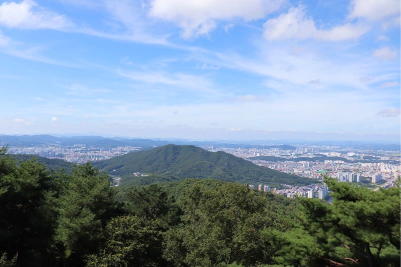
식장산
대전시 동구 대성동
4.3
면적 39.91km
/
고도 106m
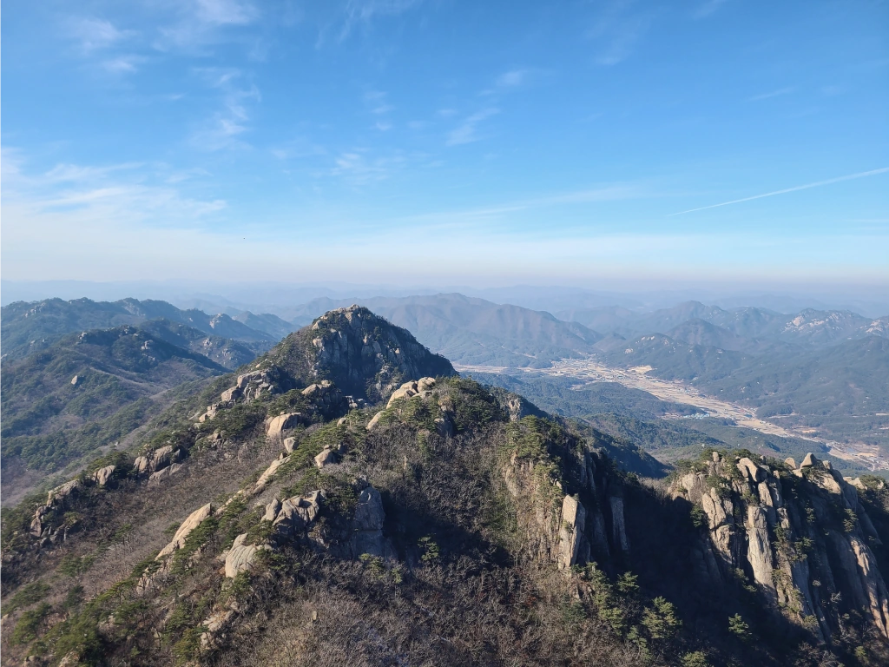
속리산 국립공원(문장대 코스)
충청남도 보은군
4.2
면적 60.98km
/
고도 1,056m
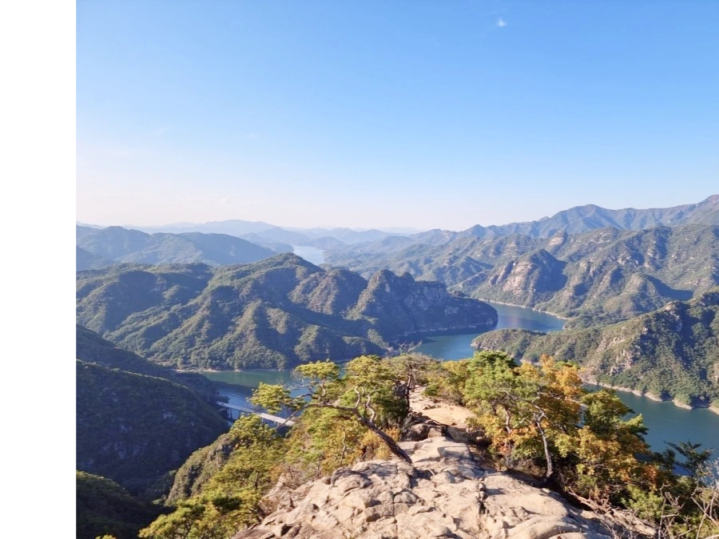
월악산
충청북도 제천시
4.6
면적 24km
/
고도 1721m
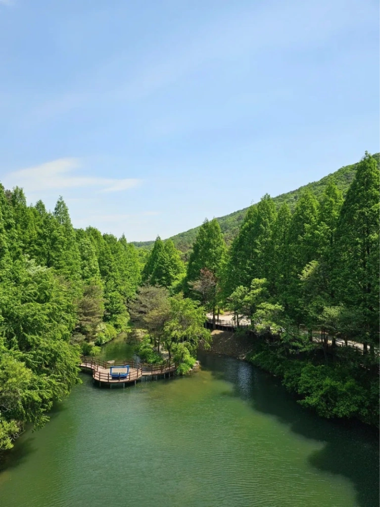
미동산 수목원
충청북도 청주시
4.2
면적 19.22km
/
고도 106m
체험 프로그램
자연을 배우고 체험하며 함께 지키는 참여형 프로그램
더보기

자연 속에서 회복하는
몸과 마음
- 산행 후 스트레칭 가이드
- 호흡과 휴식 중심의 회복 루틴
- 자연 속 쉼의 중요성 안내
성인 1인 기준
78,000
원
88,000원

걷고, 듣고, 느끼는
숲의 리듬
- 숲길을 천천히 걷는 감각 중심 산책
- 소리·냄새·촉감에 집중하는 오감 체험
- 자연과 나의 상태를 기록하는 간단한 워크시트
성인 1인 기준
22,000
원
33,000원
KMCS
실시간 통제 정보
산행 전 반드시 확인해야 할 실시간 통제 정보
대전광역시 바로가기
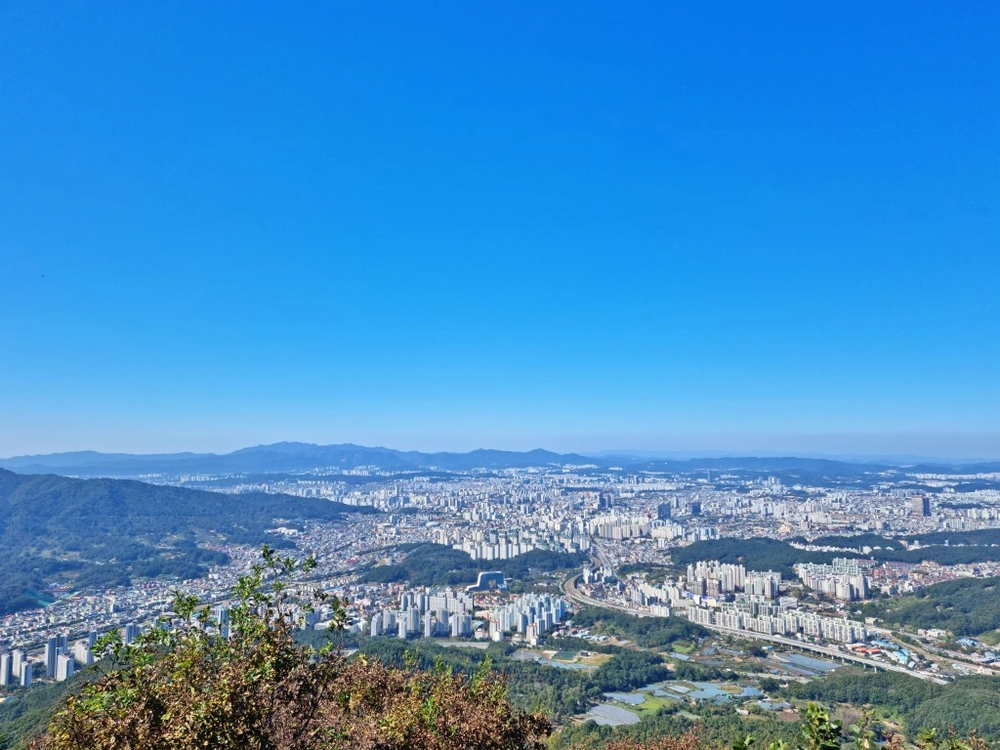
식장산
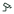

주소
대전광역시 동구 일대

시간
연중 무료 개방

고도
596m
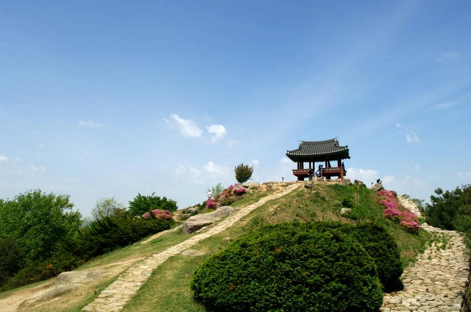
보문산
주소
대전광역시 중구 대사동

시간
연중 무료 개방

고도
000m
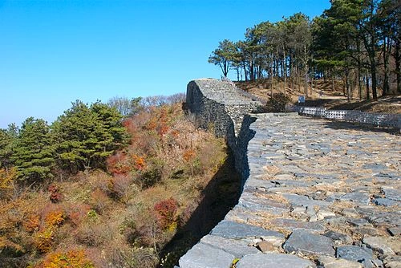
계족산

주소
대전광역시 대덕구 장동
시간
연중 무료 개방
고도
429m
현재, 인기 명소
이용자 경험을 기반으로 선정된 인기 산행 코스 소개
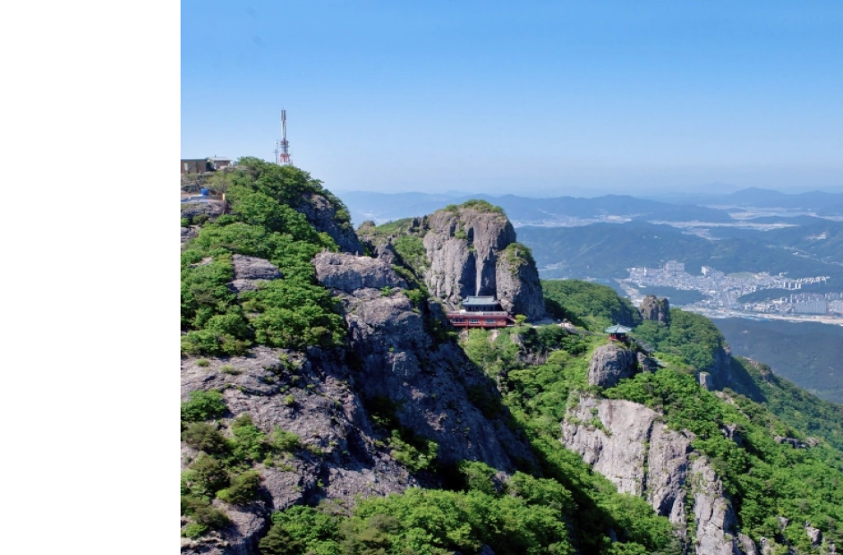
금오산
경상북도 구미시, 김천시, 칠곡군
4.3
면적 39.91km
/
고도 976.5m
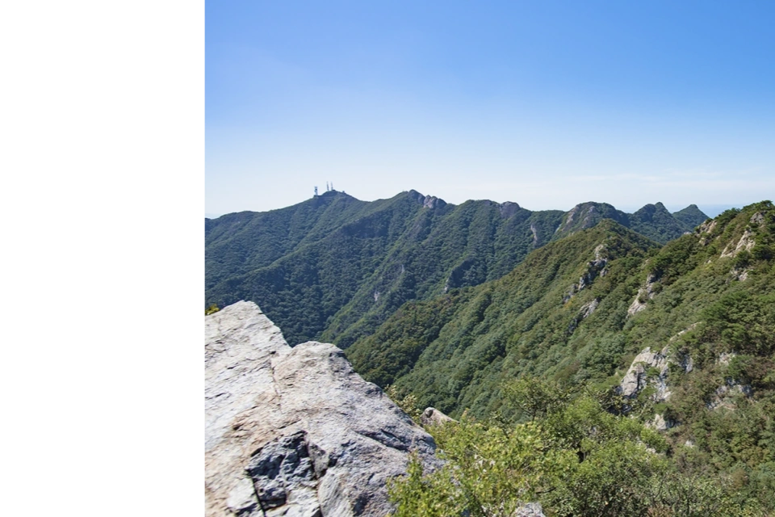
계룡산 국립공원
충청남도 공주시, 대전시
4.2
면적 60.98km
/
고도 845m
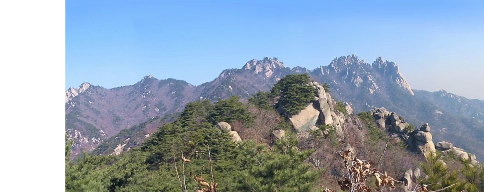
도봉산
서울특별시 도봉구, 경기도 의정부시, 양주시
3.2
면적 24km
/
고도 1,157m
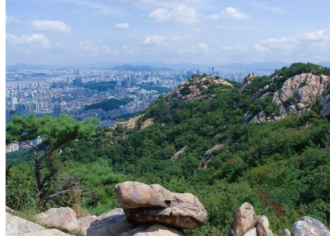
관악산
서울특별시 관악구, 금천구, 경기도 안양시, 과천시
4.1
면적 19.22km
/
고도 632m
소식
자연 보호 활동과
브랜드의 주요 소식
Notice
12
2026.03
봄철 산불 예방 캠페인 안내
건조한 봄철을 맞아 산불 예방을 위한 KMCS 캠페인을 진행합니다. 산을 찾는 이용자분들께 꼭 필요한 산불 예방 수칙과 일상에서 실천할 수 있는 보호 행동을 함께 안내드립니다...
Notice
28
2026.02
맞춤형 하이킹 코스 추천 기능 오픈
이용자의 난이도, 이동 거리, 소요 시간을 반영한 맞춤형 하이킹 코스 추천 서비스가 새롭게 오픈되었습니다. 보다 안전하고 만족도 높은 산행을 경험해보세요...
Notice
09
2026.02
국립공원 실시간 통제 정보 연동 확대
기상 상황 변화와 이용자 안전 관리를 위해 전국 주요 국립공원의 실시간 출입 통제 정보를 단계적으로 확대하여 제공하고 있습니다.기상 악화, 자연재해, 시설 점검 등으로 인한 통제 사항을 신속하게 확인하실 수 있습니다...
Notice
30
2026.01
‘한 걸음, 한 그루’ 산림 보호 챌린지 시작
하이킹 활동을 기록하는 것만으로도 산림 보호에 참여할 수 있는 ‘한 걸음, 한 그루’ 챌린지가 시작됩니다.일상 속 작은 실천으로 자연 보호에 함께해 주세요...
Notice
17
2026.02
설 연휴 기간 산행 안전 수칙 안내
연휴 기간 산행 인구 증가에 따라 안전한 등산을 위한 기본 수칙과 준비사항을 안내드립니다. 사전 확인을 통해 사고 없는 산행을 즐기시기 바랍니다...
만남의 광장
이용자들의 산행 경험과 이야기를 공유하는 공간
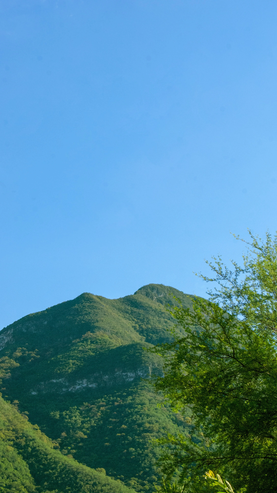
충청북도
ㅣ
장소 이름
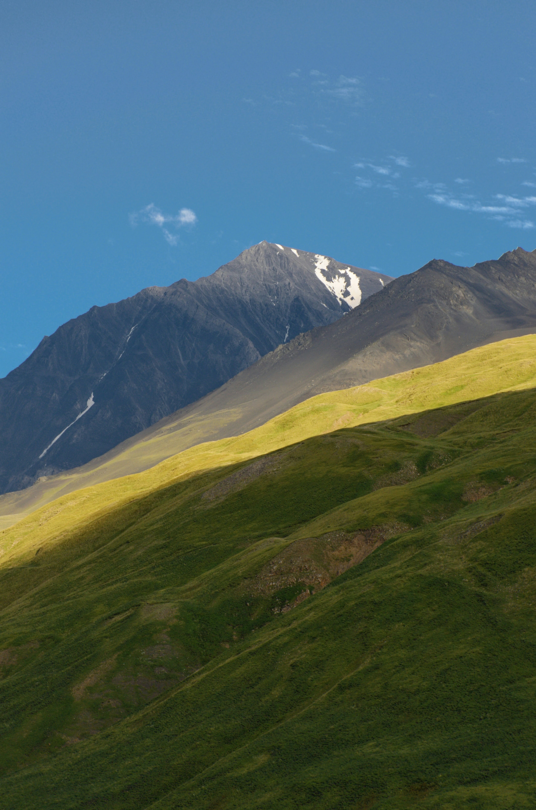
충청북도
ㅣ
장소 이름
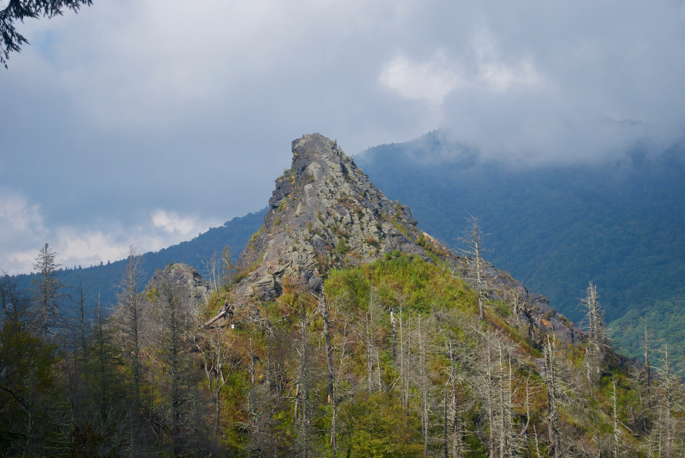
충청북도
ㅣ
장소 이름
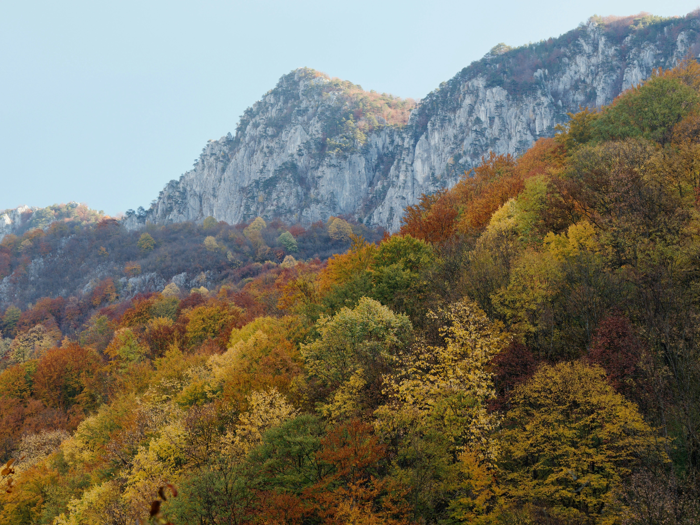
충청북도
ㅣ
장소 이름
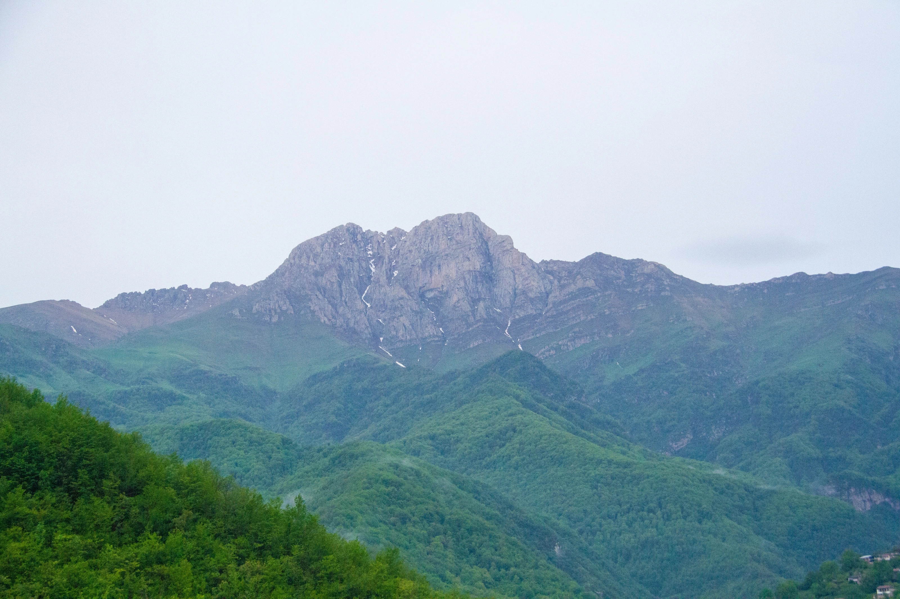
충청북도
ㅣ
장소 이름
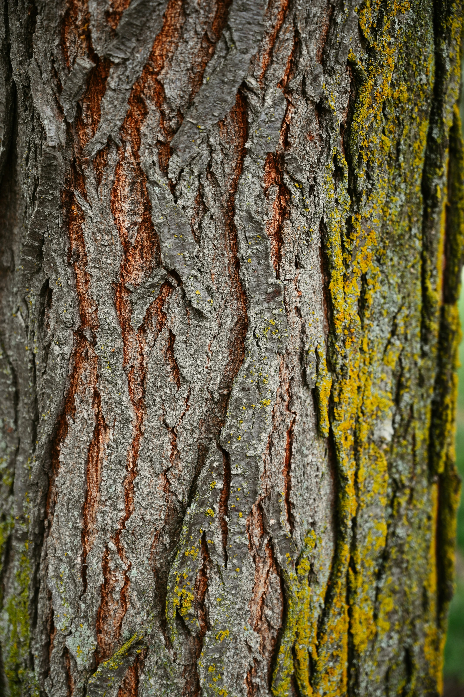
충청북도
ㅣ
장소 이름
충청북도
ㅣ
장소 이름
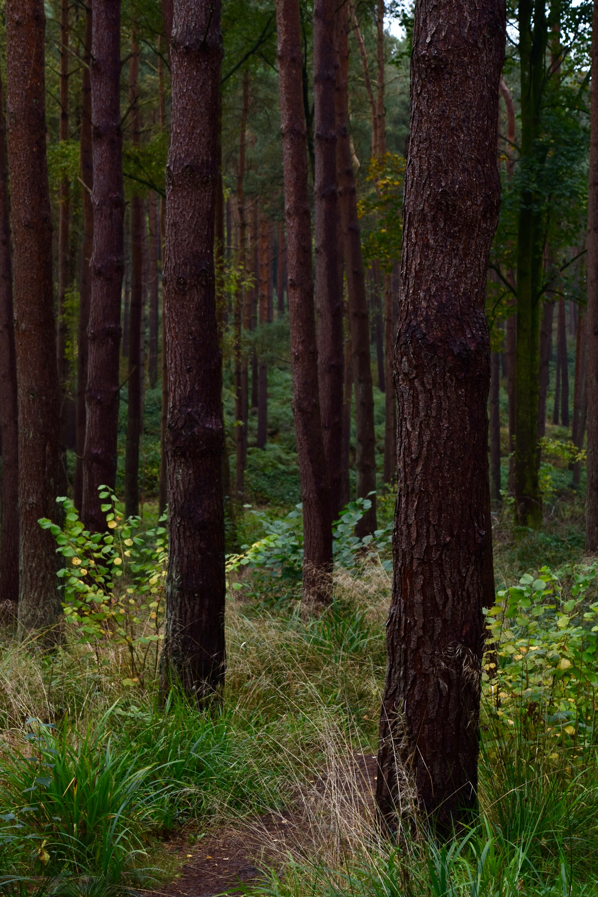
충청북도
ㅣ
장소 이름
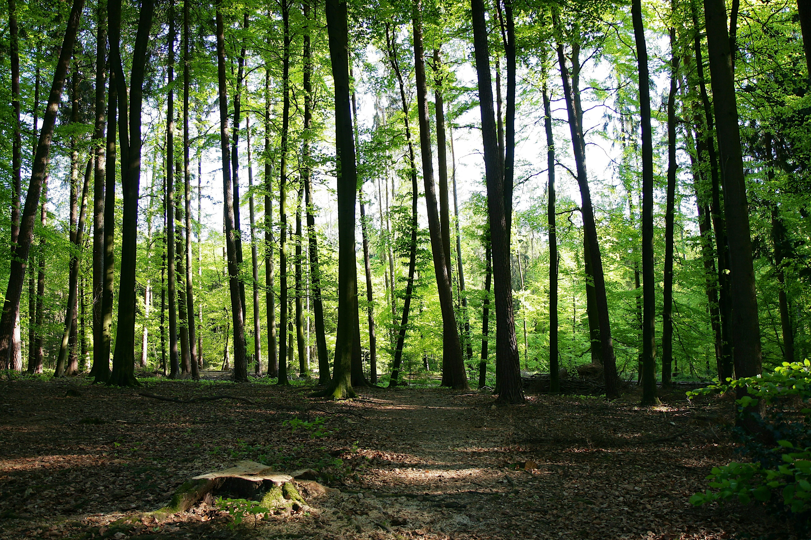
충청북도
ㅣ
장소 이름
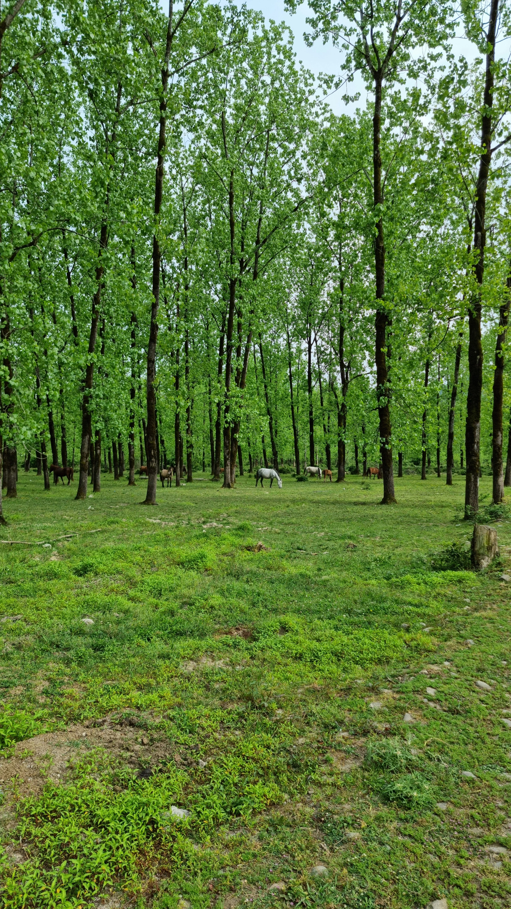
충청북도
ㅣ
장소 이름
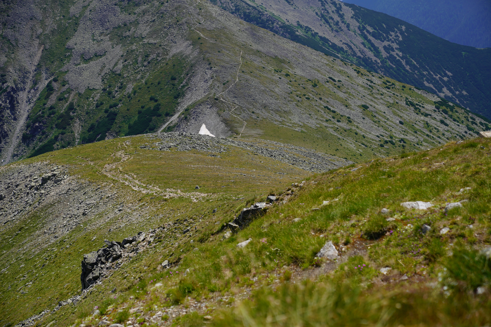
충청북도
ㅣ
장소 이름
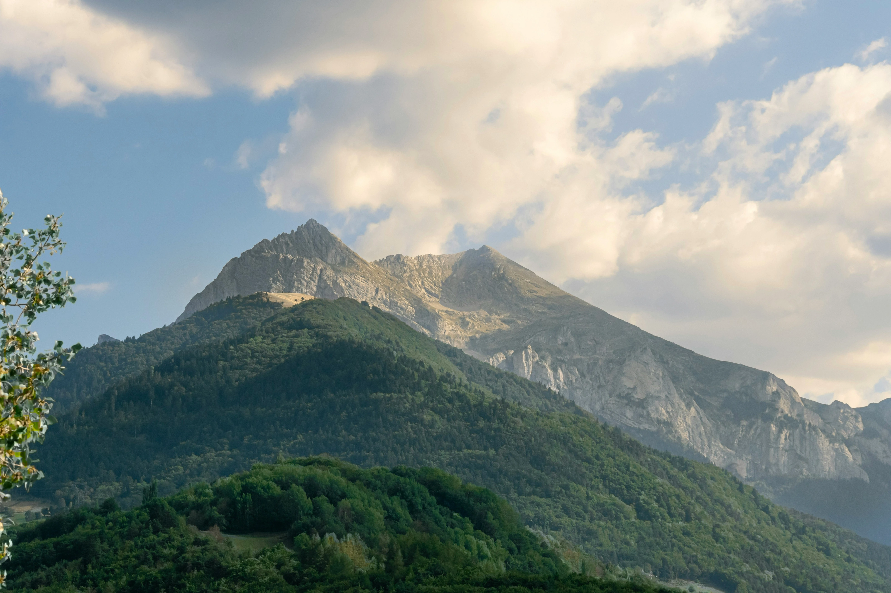
충청북도
ㅣ
장소 이름